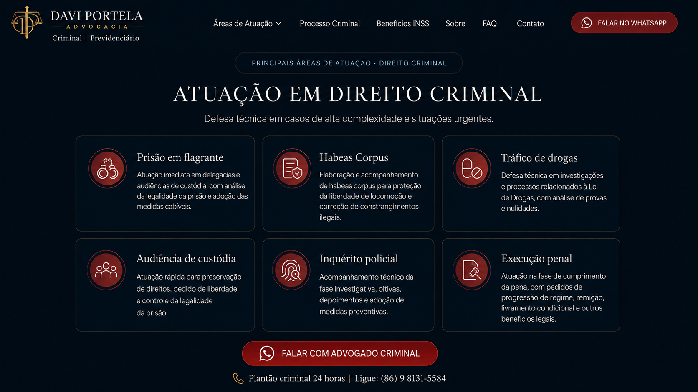
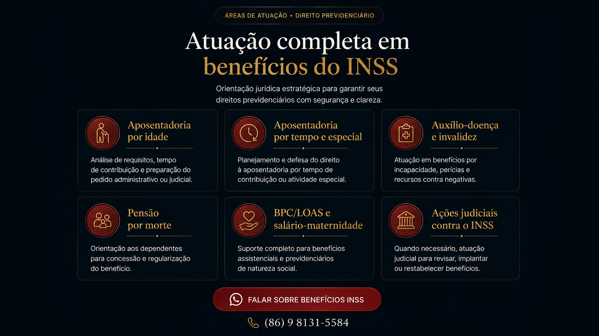
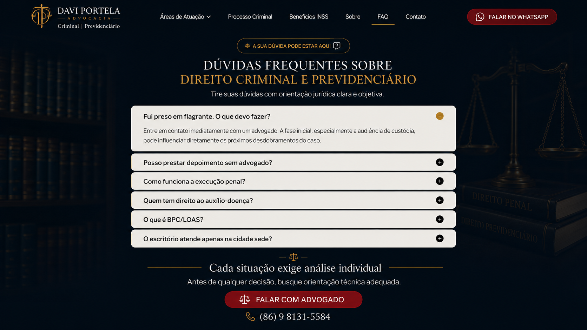

Davi Portella Advocacia Criminal e Previdenciária no Piauí
O primeiro passo importa
Recebeu intimação, mandado ou houve prisão?

Direito criminal
Escolha o atendimento criminal.
Estratégia de defesa
Defesa criminal não é improviso.
Processo criminal
Entenda a etapa do seu processo.

Benefícios do INSS
Escolha o benefício para análise.
Sobre
Davi Portella | OAB/PI 26.294

Fui preso em flagrante. O que devo fazer?
Procure atendimento jurídico imediatamente. As primeiras medidas podem influenciar todo o caso.
Posso prestar depoimento sem advogado?
O ideal é receber orientação antes de qualquer depoimento. A presença técnica ajuda a preservar direitos, evitar contradições e conduzir a estratégia desde o início.
Como funciona a execução penal?
A execução penal acompanha o cumprimento da pena, cálculo, progressão de regime, remição, livramento condicional e demais medidas cabíveis.
Quem tem direito ao auxílio-doença?
Quem está temporariamente incapaz para o trabalho pode ter direito ao benefício, desde que cumpra os requisitos do INSS e apresente documentação médica adequada.
O que é BPC/LOAS?
É um benefício assistencial para idosos ou pessoas com deficiência de baixa renda, sem exigir contribuição prévia ao INSS, desde que os critérios legais sejam comprovados.
O escritório atende apenas na cidade sede?
Não. O atendimento pode ser presencial ou online, permitindo orientação jurídica para clientes em diferentes cidades, conforme a necessidade do caso.
FAQ
Dúvidas frequentes.
Fui preso em flagrante. O que devo fazer?
Entre em contato imediatamente com um advogado. A fase inicial pode influenciar todo o caso.
Posso prestar depoimento sem advogado?
O ideal é receber orientação antes do depoimento para preservar direitos e evitar prejuízos.
Como funciona a execução penal?
Ela acompanha cálculo de pena, progressão, remição e demais pedidos cabíveis.
Quem tem direito ao auxílio-doença?
Quem comprova incapacidade temporária para o trabalho e cumpre os requisitos do INSS.
O que é BPC/LOAS?
Benefício assistencial para idosos ou pessoas com deficiência de baixa renda.
O escritório atende apenas na cidade sede?
Não. O atendimento pode ser presencial ou online, conforme a necessidade do caso.